Objectives / Goal:
This workshop is designed to introduce developers to ThoughtSpot Everywhere, how to embed analytics into JavaScript-based web applications, and integrate ThoughtSpot into typical devops toolchains. No prior experience, or paid software licenses, is required.
What you will learn:
The workshop is broken into 3 parts, with the learning objectives as follows:
- Part 1
- How to create search, visualizations, and liveboards to analyze data
- How to use the developer playground to generate javascript code to embed ThoughtSpot elements into a web app
- How to modify actions available to users and apply hidden runtime filters
- Part 2
- How to use the Visual Embed SDK to embed ThoughtSpot components into a ReactJS web app
- Part 3
- How to use the ThoughtSpot Modeling Language and the ThoughtSpot Everywhere APIs to perform typical devops functions
What you need:
- A basic understanding of Git and GitHub (you must have Git command line tools installed prior to the workshop)
- A laptop with administrator access. You will install some software and frameworks during the workshop
- A general understanding of javascript and web development. The tutorial uses ReactJS for a web framework. You don't have to be an expert, but some knowledge helps.
- A general understanding of RESTful APIs and HTTP
Open a browser and go to https://developers.thoughtspot.com/, then tap on the FREE TRIAL button. Even if you have an existing account, please sign up for a new Free Trial account for this workshop. Complete the required fields, and tap Submit. Your account will be provisioned, and you will receive an email to complete the process. Check your spam folder if you haven't received it within a few minutes.
Once your account is provisioned and you log in for the first time, you will see figure 1 (below).
Otherwise, you may see figure 2. We will skip these and go straight to the ThoughtSpot home page by selecting the ThoughtSpot logo or HOME.
Figure 1: Hello page Figure 2: Connection your data
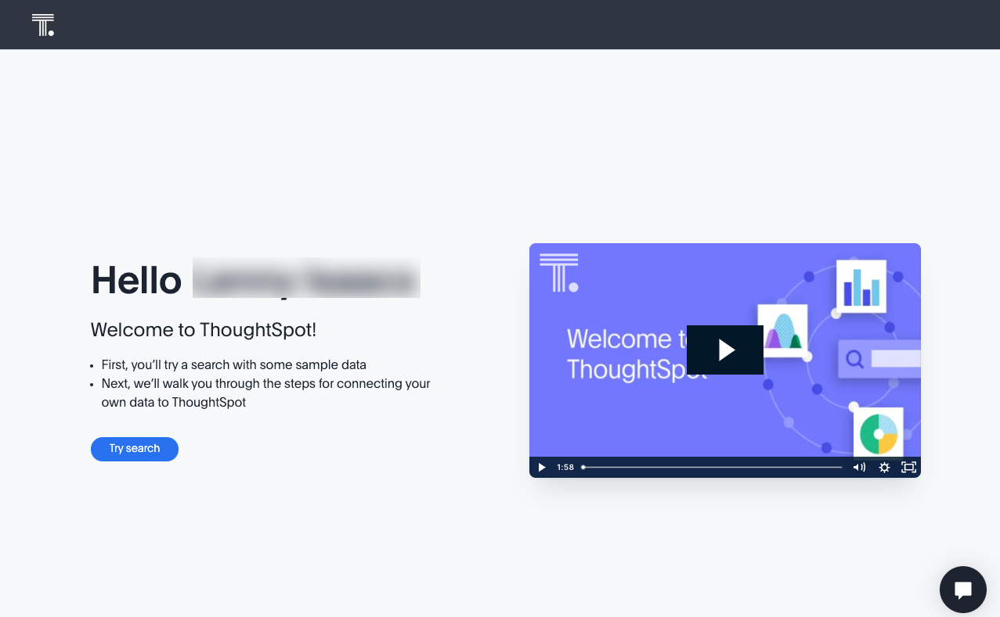 
Part 1 of this workshop will leverage the low-code tools to create search, visualizations, and liveboards to analyze data. And, introduce you to the developer playground to generate javascript code to embed ThoughtSpot elements into a web app.
You will create a couple of fresh ThoughtSpot Answers using the default "Sample Retail - Apparel '' worksheet and Pin them in a new Liveboard. The new liveboard will then be used in the Developer Playground to generate much of the JavaScript code required to embed ThoughtSpot into webapps.
- Select the ThoughtSpot logo or the HOME link on the ThoughtSpot top nav menu bar.
- Select Search Data from the Home page as shown below
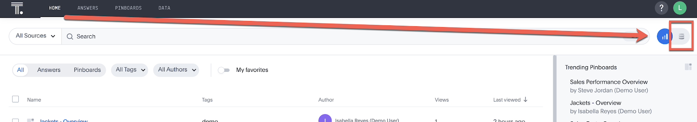
The Search Answers and Search Data buttons toggle and are sticky meaning the next time you visit the home page and select the search bar it will bring you right to the Search Data search bar.
- Confirm that Sample Retail - Apparel is the selected data source.
- Let's create the first search result for your pinboard that shows the Show the monthly trend of sales over the last 2 years
- Enter in the search bar: Sales Monthly Last 2 years
- Press Enter, Select Go, or click below the search bar to launch the query.
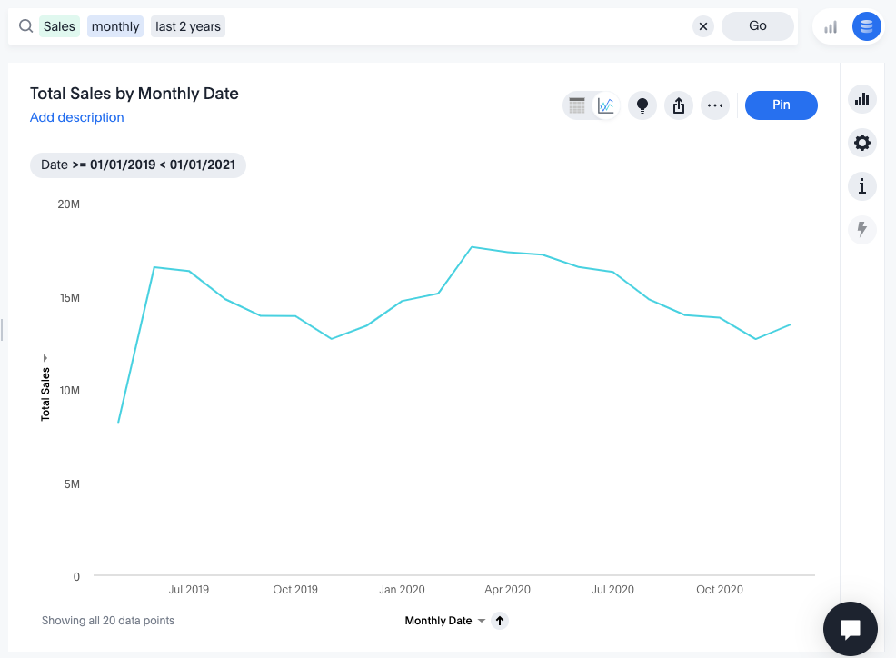
FYI: Colors legend for items in the Search bar (Green = Measures, Blue = Attributes, Grey = filters).
3. Now Pin that answer to a new liveboard
- Select the ‘ Pin button on the top right of the visualization window.
If this is the first time you are doing this then figure 3 will be displayed and the workflow for this trial automatically creates a pinboard with your login name + pinboard. Otherwise, the
Pin to Liveboard
form is displayed in figure 4.
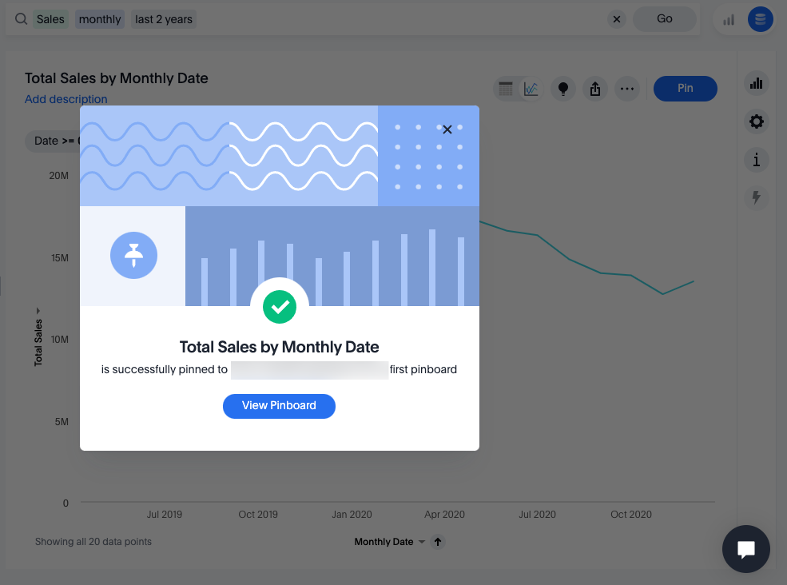 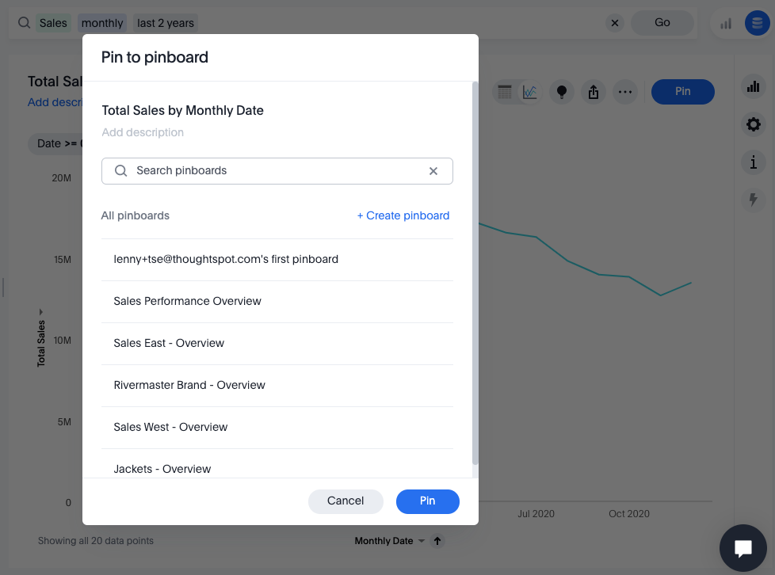
Figure 3 Figure 4
If you are prompted as in Figure 4, then select +Create liveboard
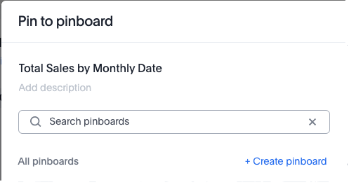
and enter "Sales Analysis Liveboard" (the word liveboard is not necessary. Only using for this illustration) and then select ‘ Pin (or the checkmark which is only shown the first time the liveboard is to be created).
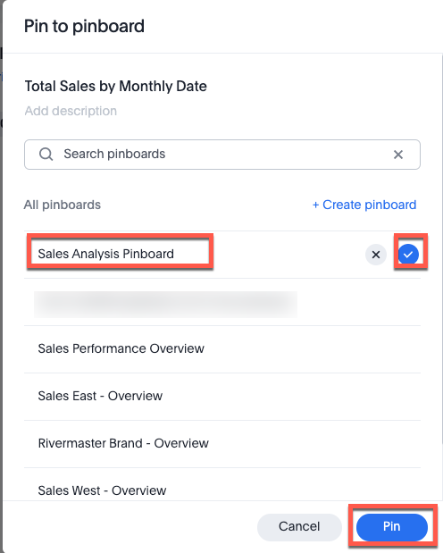
4. Start a new Search that shows the top 15 stores by their sales for last month.
- Select the "X" on the right side of the search bar to start a new search.

- Enter in the search bar: Sales Store Top 15 Last month
- Then press Enter, Select Go, or click below the search bar to launch the query. While you can change the chart time, keep this one for now.
Note the top 15 include stores from all over the USA. You will see how run time filters will be applied later to focus on the top 15 in a particular region as an example.
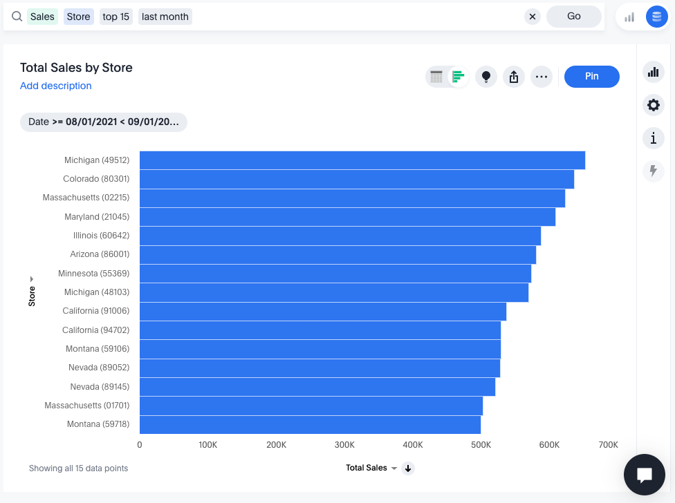
Now pin the answer to the liveboard you created previously.
- Select the ‘ Pin action, select the Sales Analysis Liveboard and finally select ‘ Pin (at the bottom of the Pin to Liveboard window) to add it.
5. View your liveboard:
- Select LIVEBOARDS on the ThoughtSpot top navbar, select Sales Analysis Liveboard to open it.

Congratulations. You now have a liveboard with 2 search answers and are ready to embed it in the ThoughtSpot Everywhere Developer Playground.
- Select DEVELOP on the ThoughtSpot top navbar to open the Developer playground.
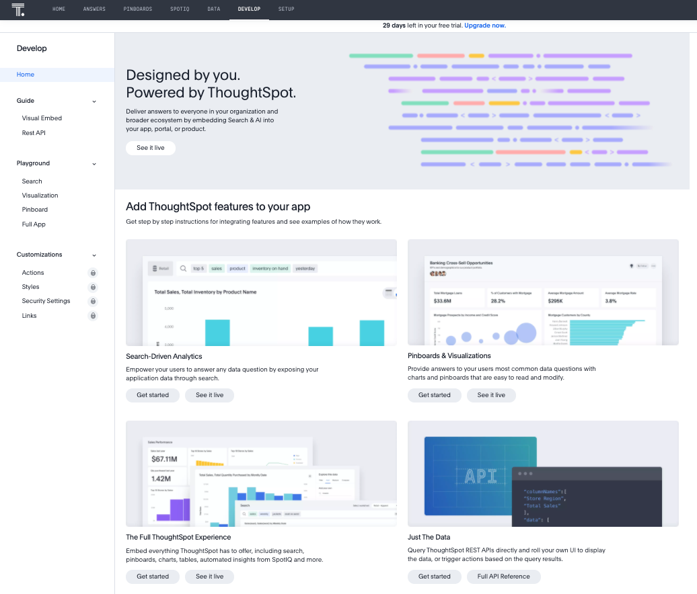
The Develop area contains 4 sections: Home, Guide, Playground, Customizations.
- Home provides immediate access to overview, 3 methods for embedding Search, Visualizations, and Pinboards, plus 1 method for accessing data via API where you then control how you want to visualize it.
- Guide provides quick access to all of the visual embed commands and Rest API calls.
- Playground provides a cloud-based sandbox environment to generate and test code needed to embed the ThoughtSpot Search experience, Visualizations/Liveboards that you or others on your team create, and the Full ThoughtSpot App (white labeling).
- Customizations provide access to creating custom Actions that can invoke a URL or trigger a callback in your parent application, changing the Styles (look and feel) for app, visualizations, and white labeling, establish Security Settings to configure automatic authentication and query data programmatically with the REST API.
Note: Customizations are only available in the paid version of ThoughtSpot and not the free trial.
Begin the playground experience by embedding the liveboard you created into the sample data app sandbox provided within the Developer Playground .
- Select Pinboard from the Playground menu.
If this is your first time doing this, a Start tour option is shown which will guide you through the steps to select and embed the ThoughtSpot object. For now, select No Thanks. Use the Start Tour button on the nav bar to revisit any time in free trial.
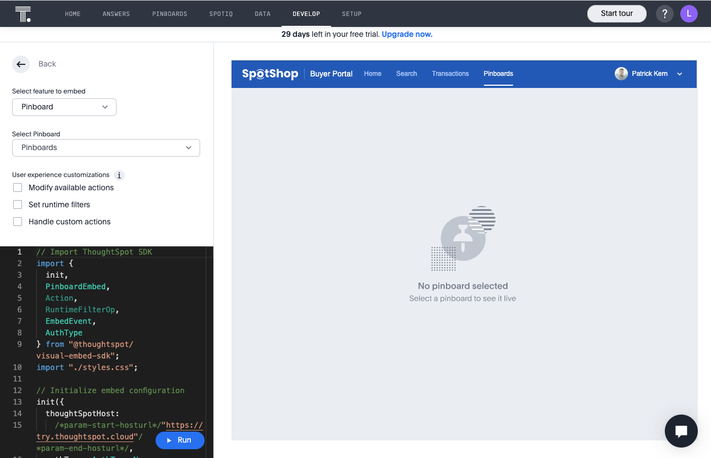
- The ‘Select feature to embed' is already set to Liveboard, select your pinboard and run to view it in the sample app
- Select your Liveboard "Sales Analysis Liveboard" from the drop-down selection menu and notice that upon choosing the liveboard, the code window on the bottom left automatically highlights the code that you would copy/paste directly into your data app.
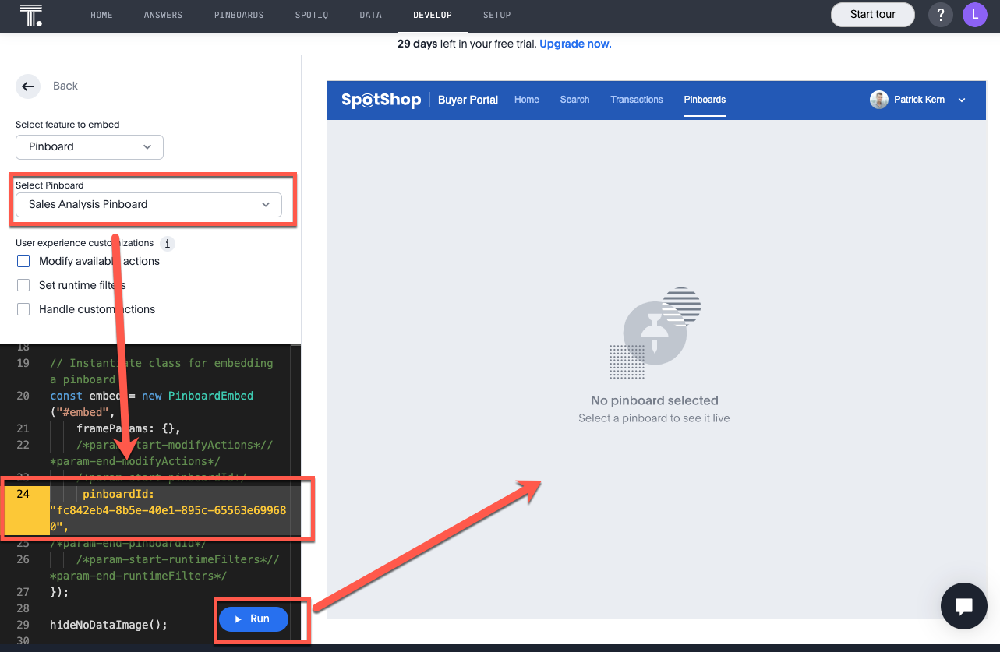 - Select ‘ Run to render it in the sample SpotShop data app window.
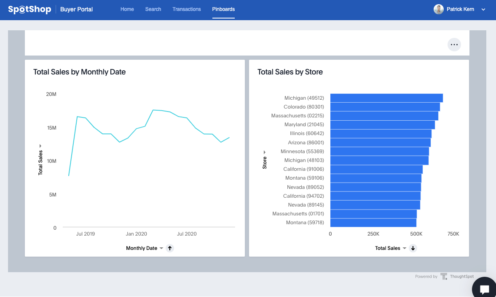
Information: Pinboards have recently been replaced by Liveboards. This change is taking place in phases. The first phase will be deployed December 2021 and will include product naming, navigation, and UI. Phase two, available in 2022 will update API paths, parameters and SDKs. Until Phase two is deployed, you will still need to refer to pinboards within any code related development.
Task 4: Modify Available Actions
There are many actions that can be disabled or hidden for example and all are documented in the Visual Embed guide accessible from the DEVELOP page and the Try It Out feature built into the documentation will bring your display directly to the area to apply them. You will apply two actions below
- First, look at the default actions available from the Pinboard menu.
- Select "..." on the top right of the pinboard view to expose the actions.
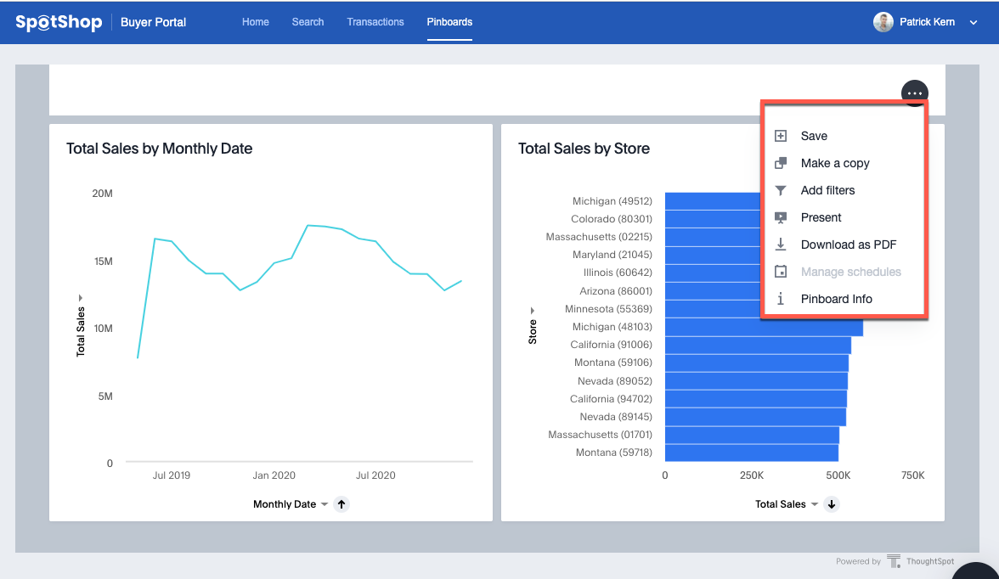 - Second, disable the Save action and hide the Make a copy, Download as PDF and Add Filters actions.
- Select Modify available actions under User experience customizations in the playground left pane. Notice the code window again, highlights the code to be affected.
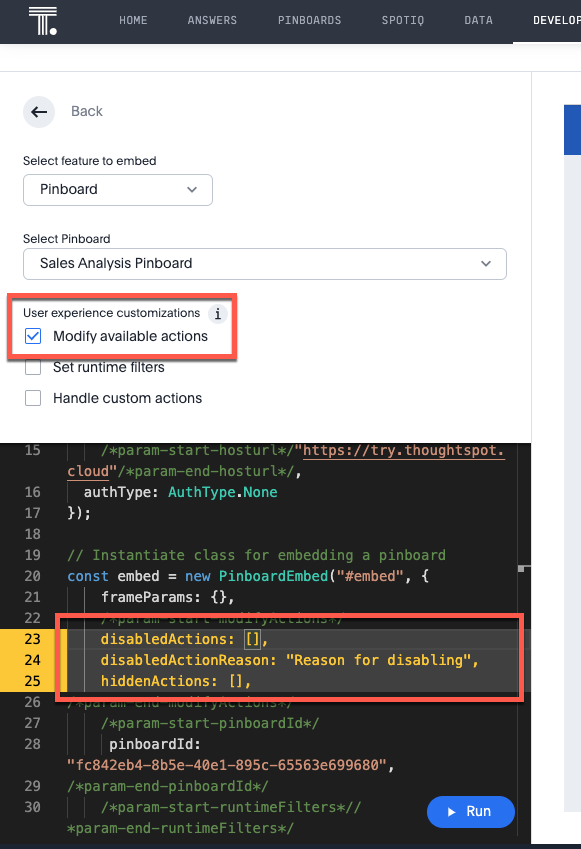
- Enter "Action.Save" inside the "{}" for the disabledActions setting.
- Change the "Reason for disabling" to "Premium action, request upgrade." for the disabledActionReason
- Enter "Action.MakeACopy,Action.DownloadAsPdf,Action.AddFilter" inside the "[]" for the hiddenActions setting.
- Select ‘ Run to render the changes.
- Select the pinboard menu "..." to view the results.
- Hover over Save to see the reason. Notice the other actions specified above are hidden.
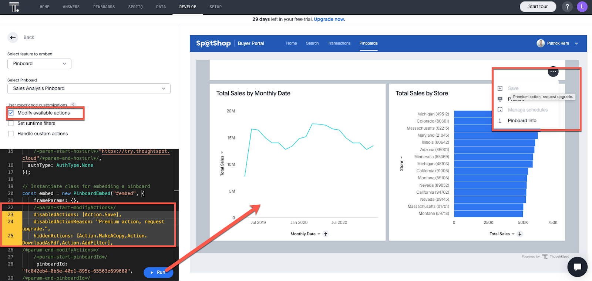
You have successfully applied modified actions.
Note that the code window is flexible where you can type in commands as well.
Applying run time filters that allow you to push filters to the liveboard. You may opt for forcing a particular filter based upon the user's role for example, or perhaps you would like to present filter choices in your own data app nav bar and push the selected values that the user selects.
- The current visualizations show data for all regions. The Total Sales by Store chart shows the top 15 stores for all regions. You will apply a run time filter to set the region to "Midwest" so the top 15 is now only for the stores in the Midwest region.
- Select Set runtime filters under User experience customizations in the playground left pane. Notice the code window again, highlighting the code to be affected.
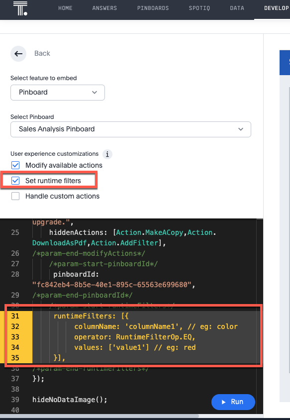
- Change ‘columnName1' to ‘region' and ‘value1' to ‘midwest'
- Select ‘ Run to render the changes.
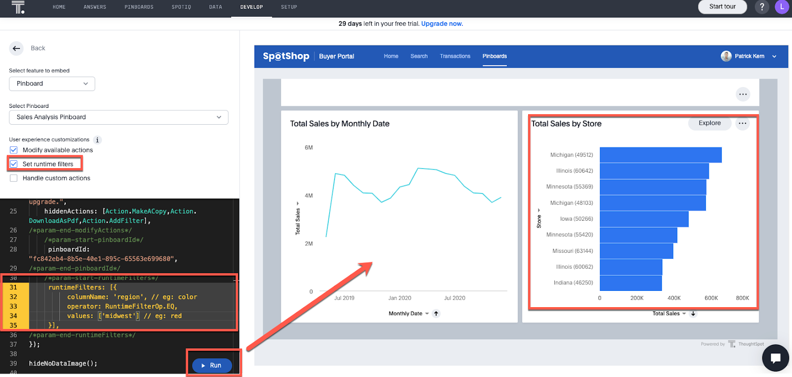
A variable can be used to programmatically set multiple values to offer the most flexibility. Again multiple columns can be filtered.
- Add one more filter to show only the data as of the last quarter.
- Copy the runtime filter code (lines 31 to 35) and paste it below the existing entry.
- Modify ‘region' in the 2nd run time filter to product type and change ‘midwest' to ‘bags'.
- Select ‘ Run to render the changes.
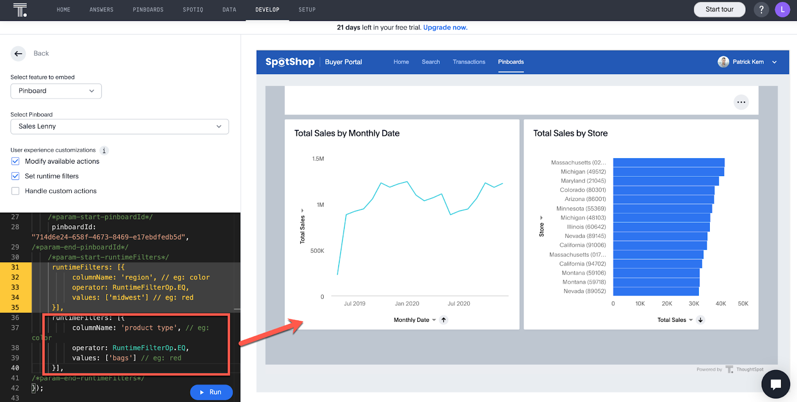
Continue with your playground experience by embedding Search into the sample data app.
- Select Search from the Playground menu.
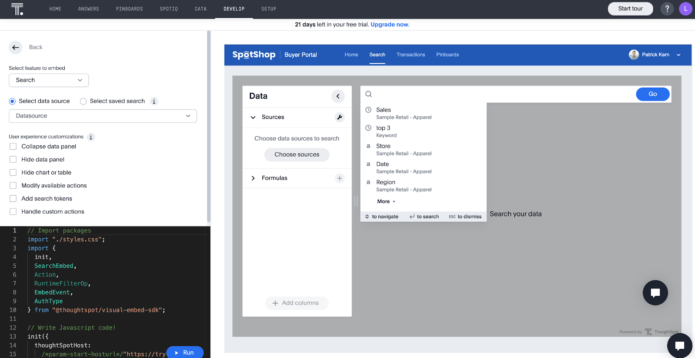
- The ‘Select feature to embed' is already set to Search, select your datasource and run to view it in the sample app
- Select your datasource "Sample Retail - Apparel" from the drop-down selection menu and notice that upon choosing the datasource, the code window on the bottom left automatically highlights the code that you would copy/paste directly into your data app.
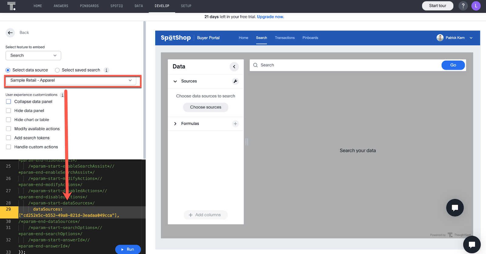 - Select ‘ Run to render it in the sample SpotShop data app window.
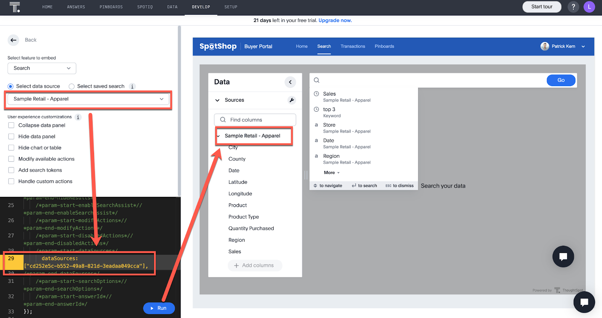
Note: Search suggestions will automatically appear in the search bar based upon what you did previously.
- Enter in the search bar: Sales Region Monthly
- Then press Enter, Select Go, or click below the search bar to launch the query. While you can change the chart time, keep this one for now.
Note: As an option you may want to enter some starting search tokens like Sales Region and let the user add more before sending the live query to the cloud data warehouse. Do that in the next task.
There are three search related actions [Collapse data panel, Hide data panel, Add search tokens] shown below. You will apply all for this task to create a starting point search and allow the user add more and then initiate the search.
- Select Collapse data panel
- Select Hide data panel
Notice the code change in the code window.
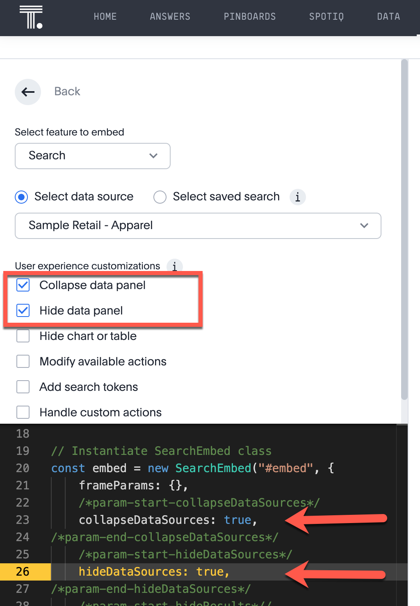
- Select Add search tokens
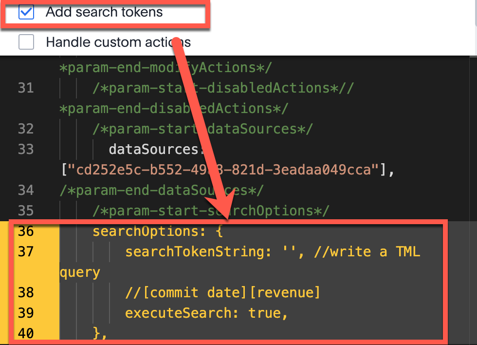
- Make the following changes to add search tokens, turn off automatic search and test it.
- Enter "[sales] [region]" inside the ‘' (single quotes for the searchTokenString setting.
- Change the "true" to "false." for the executeSearch setting.
- Select ‘ Run to render the changes.

- Enter "Monthly" in the search bar and press Go to run the search and voila, user self-service!
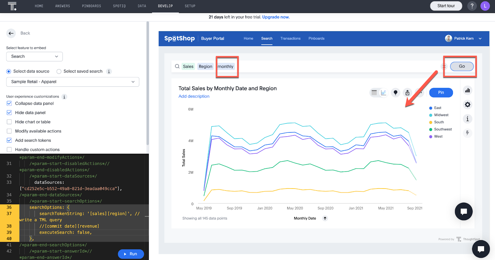
So far, we have created everything "on-platform", using the low-code developer tools. In Part 2, you will build a webapp with a simple hamburger navigation. This app will be written in ReactJS, a very popular JavaScript framework, and use the Visual Embed SDK and ThoughtSpot React components to embed Search, Liveboards, and the full ThoughtSpot app into a webapp.
We are going to use React to build our web application. Installing and configuring React, and it's dependencies is different for each environment. This tutorial will use Mac OS as the example development environment. You can find steps to install React for Windows here. For the Mac, you will need the following:
Node.js & NPM
NPM, is a very popular package management solution built with Node.js (thus the name, Node Package Manager). This tutorial will use NPM to install the React.js framework. Many Macs have Node and NPM already installed. You can check this by opening a terminal window and typing $ node -v If you do not see a successful response, go ahead and download the installer for your platform. (Please use the LTS version. Occasionally the latest release has minor bugs). Once downloaded, double-click and follow the prompts to install.
React Framework
With NPM installed, installing the React Framework is simple. Enter the following command in your terminal window:
$ sudo npm install -g create-react-app
You can verify the installation by typing:
$ npm -v$create-react-app --version
VSCode
Whilst not required, a good IDE is certainly a productivity booster for many developers. Everyone has their own preference. Feel free to use your IDE of choice. For the examples within this tutorial, we will use VSCode. If you like it, you can download it for free for your preferred platform.
To save some time, we will download an app template. This app contains a react app with a home page and a single subpage. Open a terminal window and type the following:
$ git clone https://github.com/thoughtspot/dev-workshop.git
Once complete, change directories to starter-app-template and install the npm dependencies:
$ npm install
Assuming everything installed correctly, you can now test the starter app:
$ npm start
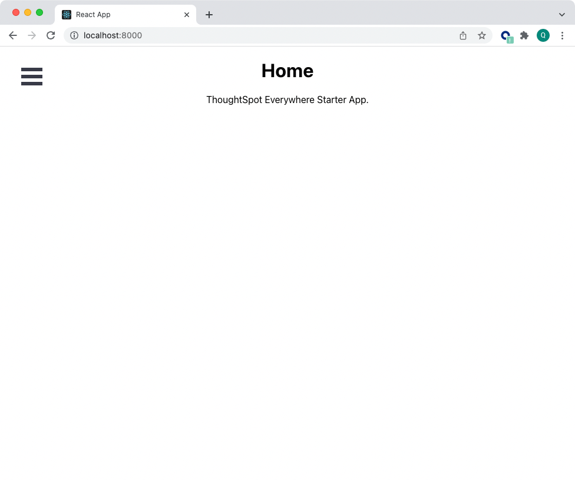
Within your IDE, open up App.jsx. There are two snippets of code worth noting. The BurgerMenu is an open source library which lets you create a hamburger style menu with flyout animation. Later, we will add links to the subpages here. The other tag of importance is the Routes. If you are new to React development, Routes are used to make a URI path to a JavaScript page/function. Currently, the app has a home route and an about route. We will use the Routes for our subpage logic.
<div className="App">
<header>
<BurgerMenu/>
</header>
<Routes>
<Route path="/" element={<h1>Home</h1>} />
<Route path="/about" element={<About />} />
</Routes>
ThoughtSpot Everywhere Starter App.
</div>
Add Visual Embed SDK to project
Now that we have a react app running locally, we need to add the Visual Embed SDK to the project and initialize the connection. From within the starter-app-template type the following:
$ npm i @thoughtspot/visual-embed-sdk
Then, in App.jsx, add the following directly after the existing imports.
// ThoughtSpot
import {
AuthType,
init,
Page,
} from "@thoughtspot/visual-embed-sdk";
const TSURL = "https://try.thoughtspot.cloud";
And, initialize the connection within the App() function. ThoughtSpot Everywhere supports a number of different authentication mechanisms. For this tutorial, we are using AuthType.None. AuthType.None will prompt you for login credentials at runtime and store it as a session cookie. AuthType.None is not recommended for production use but works fine for our demo app.
init({
thoughtSpotHost: TSURL,
authType: AuthType.None
});
Create the Search page
Next, we want to add a new page to embed a search component. Within your IDE, select the components folder and add a new file search.js

Then, add the required React and Visual SDK import to search.js
Import React from 'react'
Import { SearchEmbed } from '@thoughtspot/visual-embed-sdk/react';
And, finally add a search function below your imports. This function will return a snippet of HTML which gets rendered on display. Within this snippet we want to embed our answers component. Previously, in the Developer Playground section, you saw how you generate standard JavaScript code. For your convenience, the Visual Embed SDK also ships with React components. In this example, we will use the SearchEmbed component. You can view a complete example of search.js here.
export default function Search() {
return (
<div>
<h1>Search</h1>
<p>
This Search uses the Sample Retail - Apparel datasource which comes with the ThoughtSpot Free Trial account.
You can also use the <a href="https://try.thoughtspot.cloud/#/develop/playground/search" target="_blank">Developer Playground</a> to configure additional parameters.
</p>
<p> </p>
<SearchEmbed frameParams={{hideDataSources: "true", height: "80vw"}} answerId={"cd252e5c-b552-49a8-821d-3eadaa049cca"}/>
</div>
)
}
Looking at the search embed component, you will see parameters you are already familiar with from the Developer Playground task previously. Go ahead and add or remove parameters based on those available. The most important parameter, however, is the answerId. If you remember from working with the Developer Playground, selecting a saved search in the down down list inserted a unique id. We need this id to tell the SDK which element to fetch. Open up the Developer Playground, choose Search as the feature to embed, then Sales Analysis Liveboard from the Select saved search dropdown. Copy the inserted id into your code between the double quotes, then save your file. That's it. Your search embed is complete.
Add Search Routes
To add the new page to our navigation, we need to add the Search function to our Routes, then include the new route in the hamburger menu. Open App.jsx and add the following import. This tells our app where our search function resides
import Search from './components/search'
Then, add a route to our function. Add this between the home and about routes within the App() function. The route tells our app that when we enter a URI, in this instance, /search where we should route that request.
<Route path="/search" element={<Search />} />
Your complete App.jsx should now look like this:
import './App.css';
import { Route, Routes} from "react-router-dom";
import BurgerMenu from './components/burger/burgermenu';
import Search from './components/search'
import About from './components/about';
import {
AuthType,
init,
Page,
} from "@thoughtspot/visual-embed-sdk";
const TSURL = "https://try.thoughtspot.cloud";
init({
thoughtSpotHost: TSURL,
authType: AuthType.None
});
function App() {
return (
<div className="App">
<header>
<BurgerMenu/>
</header>
<Routes>
<Route path="/" element={<h1>Home</h1>} />
<Route path="/search" element={<Search />} />
<Route path="/about" element={<About />} />
</Routes>
ThoughtSpot Everywhere Starter App.
</div>
);
}
export default App;
Add Search to the hamburger menu
Finally, let's add the new route to the hamburger menu. Open components/burger/burgermenu.js and add the following code between the home and about links, similar to what you did with the Routes previously.
<a className="bm-item" href="/search">Search</a>
Run your app
Save everything, and run your app from the command line using npm start. If everything is completed correctly, you will be presented with the home page as before, but now, when you expand the hamburger menu you will have an additional link, Search, included. Tap that link to open the new page. Since this is your first time accessing the page you will be prompted to log into ThoughSpot. Use your free trial credential and login. You should now see your embedded search component. Great job!
One of the great things about developing with React is the wealth of third party libraries available. The hamburger menu we just used is a great example. This library saves a huge amount of effort in building typical app functionality. If you want to have fun with your app, try playing around with the animations available in the hamburger menu to give your menu a little extra bling. For example, my favorite is the Elastic animation. To use this animation to your app, open burgermenu.js and change the word slide for elastic in the react-burger-import statement.
import { elastic as Menu } from "react-burger-menu"
You can also easily change the menu location from the left hand side, the default, to right:
<Menu right noOverlay onStateChange={toggleMenu}>
The react-burger-menu is a very useful react library. I highly recommend you check out all the features. It will save you a lot of time in your projects.
Embedding a liveboard component is very similar to what you just completed with the Search component. You need to create a new page and add the Liveboard component, then add it to your routes and the hamburger menu. Let's jump right in.
Create the Liveboard page
Add a new file, liveboard.js in the components directory, and use the Developer Playground to fetch the pinboardId for Sales Analysis Liveboard.
import React from 'react'
import { PinboardEmbed } from "@thoughtspot/visual-embed-sdk/react";
export default function Liveboard() {
return (
<div>
<h1>Liveboard</h1>
<p>
This Search uses the Sales Performance liveboard which comes with the ThoughtSpot Free Trial account.
You can also use the <a href="https://try.thoughtspot.cloud/#/develop/playground/pinboard" target="_blank">Developer Playground</a> to configure additional parameters.
</p>
<p> </p>
<PinboardEmbed frameParams={{height: "80vw"}}
pinboardId={"d084c256-e284-4fc4-b80c-111cb606449a"}/>
</div>
)
}
Information: Pinboards have recently been replaced by Liveboards. This change is taking place in phases. The first phase will be deployed December 2021 and will include product naming, navigation, and UI. Phase two, available in 2022 will update API paths, parameters and SDKs. Until Phase two is deployed, you will still need to refer to pinboards within any code related development.
Add Liveboard Route
Open App.jsx and import the Liveboard function after the Search import:
import Liveboard from './components/liveboard'
Then, add the function to the Routes element after the Search route:
<Route path="/liveboard" element={<Liveboard />} />
Add Liveboard to the hamburger menu
Open components/burger/burgermenu.js and add the link to the Liveboard route, after the Search navigation item:
<a className="bm-item" href="/liveboard">Liveboard</a>
Run your app
Save everything and run your app to test the liveboard is embedded correctly. If your app was already running, since we added new files and a route, you may need to stop the process and start it again with npm start.
By now, you should be getting familiar with using the React components and adding them to your projects. The last type of component we will use is the FullApp component. As the name implies, this component embeds the full ThoughtSpot experience. Let's jump right in.
Create the Fullapp page
Add a new file, fullapp.js in the components directory. You will notice in the AppEmbed component, we don't need to pass in a specific id, instead we can use Page.* attribute. This attribute refers to the pages or tabs within ThoughtSpot. For example, I could use Page.Liveboards to point directly to the Liveboards page. For our app, we are going to point to the ThoughtSpot home page, using Page.Home. For a complete list of values check out the documentation.
import React from 'react'
import { AppEmbed } from "@thoughtspot/visual-embed-sdk/react"
export default function FullApp() {
return (
<div>
<h1>Full App</h1>
<AppEmbed frameParams={{height: "80vw"}} fullHeight="true"
pageId="Page.Home" />
</div>
)
}
Add Fullapp route
Open App.jsx and import the Fullapp function after the Search import:
import FullApp from './components/fullapp'
Then, add the function to the Routes element after the Liveboard route:
<Route path="/fullapp" element={<FullApp />} />
Add Fullapp to the hamburger menu
Open components/burger/burgermenu.js and add the link to the Liveboard route, after the Search navigation item:
<a className="bm-item" href="/fullapp">Full App</a>
Run your app
Save everything and run your app.
At this stage, you've completed your app and should have a great understanding of how you can use the Visual Embed SDK. Give yourself a pat on the back. Great job! If you run out of time, or are having trouble getting everything working, check out the completed app and compare your code.
ThoughtSpot Everywhere provides a rich suite of APIs for search, user controls, and platform metadata. These APIs can be especially useful for sharing data with partners via webhooks, building native mobile apps, providing results in json format for third-party charting libraries like D3, or scripting ThoughtSpot configuration to support devops and continuous integration toolchains.
ThoughtSpot metadata is referred to as ThoughtSpot Modeling Language, or TML. TML is a JSON-based definition of configuration and elements within your ThoughtSpot instance. The answers, liveboards, and data model you have used throughout this tutorial are all defined in TML. This makes TML very powerful for many administrative and devops tasks. For example, you can use the APIs and TML as part of a deployment script to export a liveboard from a test environment and push it to production. In this section, we will introduce the ThoughtSpot Everywhere Rest APIs by using Postman, a free IDE designed for working with APIs. We will also demonstrate how, using TML you can retrieve ThoughtSpot elements for storing in version control or make changes for different environments.
In Part 3, you will learn how to use the ThoughtSpot Modeling Language and the ThoughtSpot Everywhere APIs to perform typical devops functions
Start by downloading Postman and install it on your machine. Whilst Postman is not necessary, it makes it much easier to set up API endpoints and get request headers and parameters correct before adding commands to any sort of larger process. This way, you know my API calls are correct and always have a way of testing independently of other systems. If you prefer not to use Postman, all of the API calls can be completed using cURL or the new Rest API Playground.
Global environment variables
Once downloaded, you will need to set up a couple of global environment variables. These variables are dynamically inserted into your commands similar to the way a variable in a bash script works. Global variables make switching between environments quick and keep sensitive information like usernames and passwords separate. For working with ThoughtSpot,it is good practice to create a set of variables per environment (e.g.dev, test, staging, production, etc.) and add three global variables to it. Go ahead and tap on environments, then + to add a new set. Let's call it TSE Workshop. Once created, add the following three variables.
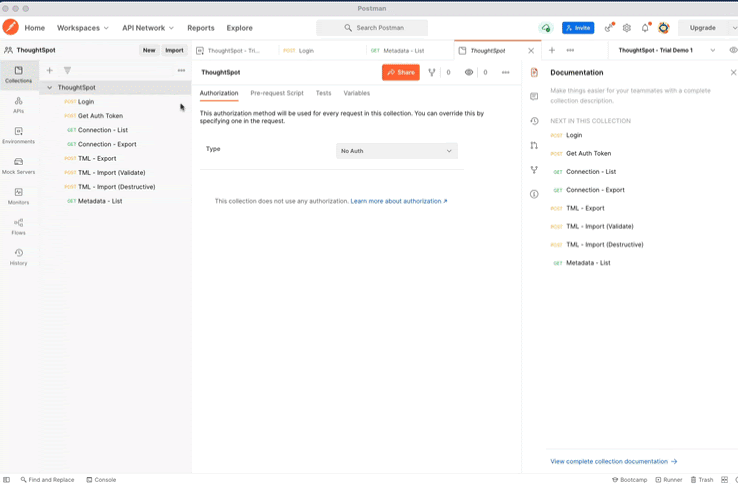
domain | The url of the cloud instance you are connecting to. For a trial instance, it is |
username | The username of your ThoughtSpot account |
password | The password of your ThoughtSpot account |
Note:Make sure you tap save to persist your changes. Even though you may have changed the values, they are not reflected in Postman until you save them.
Add ThoughtSpot collection
To save developer's time, we have created a GitHub project with a set of ThoughtSpot APIs defined as a Postman collection. Over time, more endpoints will be added to this project. Make sure you follow and star it to keep up to date. For now, go ahead and download the collection. Then, import the ThoughtSpot collection by navigating to Collections > Import, and selecting the file you downloaded.

To keep things neat, it is a good idea to adopt a naming convention that begins with a prefix which identifies the category and ends with what the function does. As you add more endpoints, a consistent naming convention makes it easy to find the function, and it aligns well with how the API docs are categorized. In the example below, we are using the Connection API to list all CDW connections in a ThoughtSpot instance. You can also see in the URL field the use of the {{domain}} variable we created.
Note: In order to ensure you are using the correct values, don't forget to select the environment from the dropdown on the top right of the workspace.

Almost every task involving APIs requires authentication via login. Let's use this to get yourself familiar with what is required from ThoughtSpot, and a general understanding of how Postman works. Start by having your Connections workspace open in Postman and selecting Login. Most ThoughtSpot API requests require standard headers such as Content-Type and a Requested-By identifier the platform uses to determine payload formats. For login, the most important is the body attributes required to be passed in via a POST. Here you can see where the global variables are being used to make it more convenient for you.
Make sure your environment is set to TSE Workshop, then tap send. The server response will appear in the bottom section of Postman showing the status of your request, and options for formatting the output. In the example below, the login attempt was unsuccessful because the user account has expired.
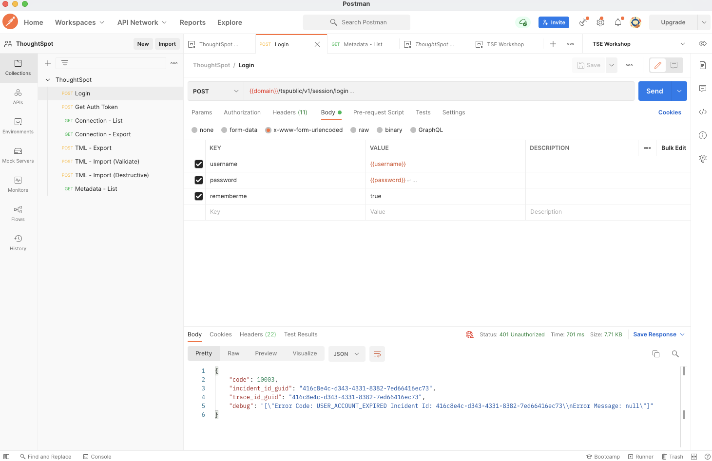
If you received an error message, double check your username and password global variables are correct, and the environment is set to TSE Workshop. When you receive a HTTP 200 message, you have successfully authenticated and an auth token is assigned to your postman session.
Now that you have successfully authenticated, let's use the metadata API to retrieve a list of Answer elements from your environment. We will use the metadata/list endpoint to return a TML definition of all answers in ThoughtSpot.
List all Answers
Within your Postman collection, select Metadata - List. This endpoint takes a single parameter type. Type allows you to choose which type of element you want to return. We are using QUESTION_ANSWER_BOOK. Tap Send and you should see a response appear in the lower window. If your response looks like a long string of JSON, make sure you change the response format to JSON and select Pretty in the response window.

Retrieve answer TML
Next, we want to retrieve the tml definition of the Sales Analysis Liveboard answer we created earlier. To do this, we need to use the answer id and use this as a parameter for the tml/export API endpoint. You can either retrieve this id from Developer Playound, the search.js page, or simply by searching the TML returned in the previous step for "Sales Analysis Liveboard". Once you have the id, add it to the export_ids array in the TML - Export connection. This connection uses metadata/tml/export endpoint, which requires a HTTP POST. The export_ids must be passed as a body element.

Once you have added the correct id, tap Send and see the TML payload returned in the lower window. This TML is an example of a file you would likely store in source control as a backup for your environments configuration. Within the Postman response window, make sure the format is set to JSON, the means your IDEs and editors will automatically recognize the format and use correct syntax highlighting.
Prepare TML payload
The output of the tml/export task above includes a json envelope which describes the tml. We are going to simulate importing this into a different environment such as production via the API. First, we need to remove the envelope. If you were doing this in a real environment, you would write a script to extract the required element, or use an open source toolkit like TML tools, written by ThoughtSpot. For the workshop, we will simply copy the element we need.
Select all of the output from the tml/export in the Postman response window, making sure the output is set to JSON and Pretty. Copy the contents to the clipboard. Then, open your IDE and create a new file. Paste the contents into this file. Now select and copy the value of the edoc key, including the double quotes. (This will start with "guid).
If you prefer not to copy and paste, and already have python installed on your computer, you may want to use this handy helper utility to correctly extract edoc data.

TML import
Return to Postman and select the TML - Import (Validate) collection item. Tap the Body tab and replace the value of the import_objects within the [] with your snippet. Then, tap save. You will notice that we have the import_policy set to VALIDATE_ONLY. We can use this policy to test our TML syntax without actually writing the file. If you want to make a destructive change and write the TML you can do so using the PARTIAL or ALL_OR_NOTHING policy.
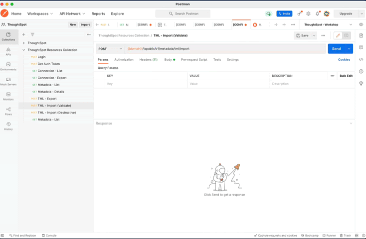
When you are ready, tap send to execute the request. Congratulations, you just learned how to use TML and the metadata APIs to complete a typical devops process with ThoughtSpot.
Congratulations! You have completed the Embed Analytics with ThoughtSpot Everywhere Developer Workshop. The free trial environment you signed up for is good for 30 days to help you continue to learn ThoughtSpot and build out your own app. If you have any questions, make sure you check out the reference guides below, or post a question to the developer forum in our community page.
Reference Guides
- ThoughtSpot Developers home: https://developers.thoughtspot.com
- ThoughtSpot Everywhere documentation: https://developers.thoughtspot.com/docs/?pageid=introduction
- Quickstarts & Tutorials: https://developers.thoughtspot.com/guides
- Visual Embed SDK JavaScript Reference: https://developers.thoughtspot.com/docs/typedoc/index.html